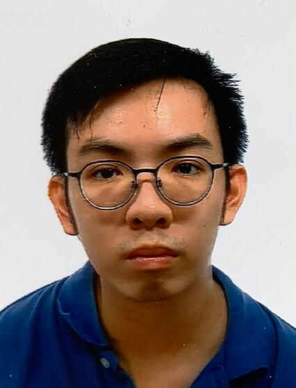

Shawn Luah Yexiang

Summary
I am a hardworking individual with experience in both front end and back end programming
Education
- Diploma in Mobile Software Development - Republic Polytechnic (2017 - 2019)
Work Experience
Skills
- Creativity
- Coordination
- Programming
Awards and Certifications
- Diploma in Mobile Software Development - Republic Polytechnic
- American Swimming Coaches Association (ASCA) Level 2 Certificate
Other